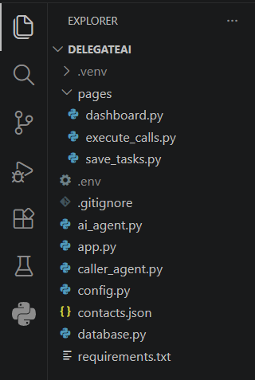
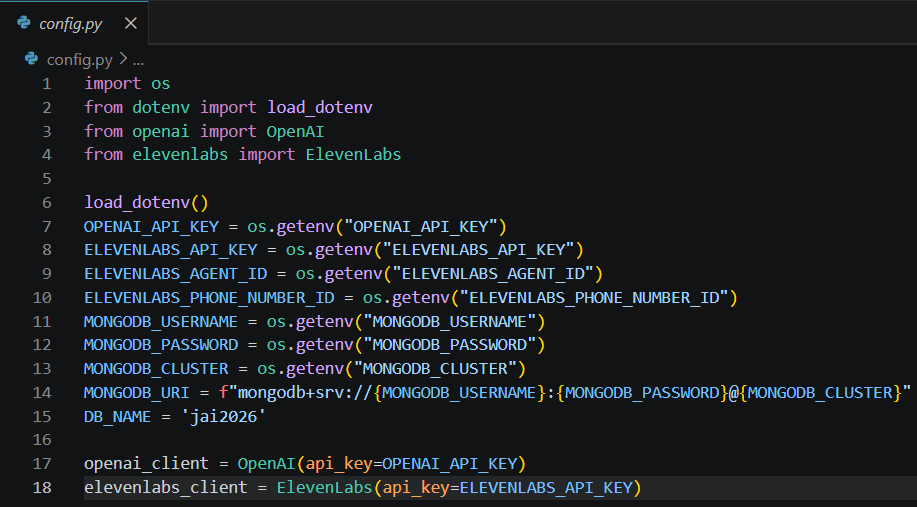
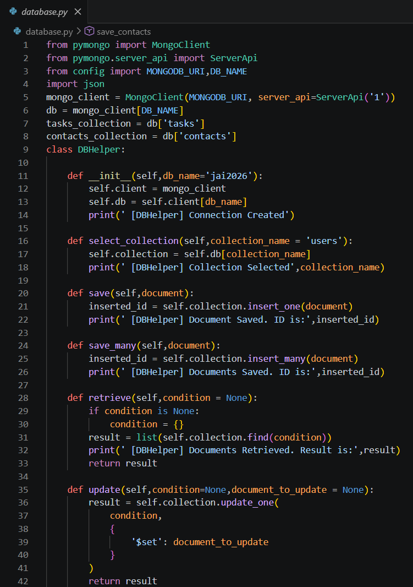
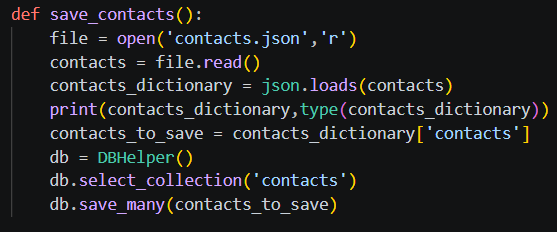

Date: 22nd July 2026
Duration: 2 Hours
Training Company: Auribises Technologies
Trainer: Mr. Ishant Kumar
Today marked the official beginning of our capstone project, Delegate AI. Unlike previous sessions where individual concepts were explored separately, this project combines everything learned throughout the training into a single intelligent application. The focus of today's session was setting up the project architecture, organizing the source files, configuring the required services, establishing the MongoDB database connection, and importing contact information that will later be used by the AI calling system. A strong project foundation was created to support the advanced features that will be implemented in the upcoming sessions.
We started by creating the complete project directory for Delegate AI. Instead of writing the entire application in a single file, the project was divided into multiple Python modules, each responsible for a specific task. Separate files were created for application configuration, database connectivity, AI processing, contact management, and future calling functionality. Organizing the project in this modular manner makes the application easier to maintain, debug, and extend as new features are added.

A centralized configuration file was created to manage all external services required by the application.
Environment variables were loaded securely using the python-dotenv package, allowing API keys
and database credentials to remain outside the source code. During this step, clients for OpenAI,
ElevenLabs, and MongoDB were initialized so they could be accessed throughout the project whenever needed.
This approach improves both security and code organization.

The next stage involved connecting the application to MongoDB Atlas. A reusable DBHelper class
was implemented to simplify interactions with the database. The helper class provides methods for selecting
collections, inserting documents, retrieving stored data, updating existing records, and deleting unwanted
documents. This abstraction allows the rest of the application to communicate with the database without
repeatedly writing MongoDB-specific code.

Before the AI assistant can place phone calls, it requires a list of contacts. A JSON file containing sample contact information was created, and a utility function was developed to read the file and store all contacts inside the MongoDB database. Using JSON for initial data population makes the system flexible, as new contacts can easily be added or modified without changing the application's source code. This contact collection will later be accessed whenever the AI agent needs to initiate an outbound call.

Build the complete Delegate AI project foundation by creating the directory structure, configuring all required services, connecting MongoDB Atlas, and successfully importing the contact list into the database.
Today's session demonstrated that building an AI application involves much more than writing machine learning code. Creating a well-organized project structure, configuring external services securely, and designing reusable database components are equally important. By the end of the session, Delegate AI had a solid technical foundation that would support the intelligent task management and AI calling features we planned to develop in the following days.
In the next session, we will begin developing the user interface for Delegate AI and implement an AI-powered task manager using OpenAI Function Calling. The application will be capable of understanding natural language instructions and performing task management operations through an interactive Streamlit chat interface.